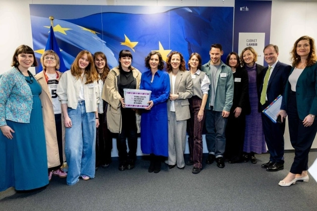

Mass-filing ECIs
Weaponizing European Citizen Initiatives

I'm sure you all have heard of MyVoice MyChoice, the successful European Citizen Initiative (ECI) for providing financial means for abortions in member states that do not provide any support. The principle of ECIs is simple: you propose a topic to the European Commission. If accepted, because in their field of competences, you have 1 year to collect 1 million signatures across at least 7 EU member states. If you succeed, your topic can be added to the Commission's legislative agenda.
The idea
Currently only 1-2 ECIs per year pass this threshold (the other one having done so is Stop killing games). Now imagine instead of 1-2 per year, someone figures out how to pass 10, 20 or more ECIs. This would mean real influence on the EU legislative agenda. I want Volt Europa to do just that. How? By first building a supporter base (think a mailing list) of at least 1 million citizens and then filing one topic after another asking our supporter base to sign them.
What does it mean concretely?
The advantages are many:
- We give our MEPs legal initiative - one of our key Volt Europa goals. Through the backdoor, but until treaty reforms, who cares.
- We can add our Moonshot to the legislative agenda instead of trashing it and writing a new one in 2029.
- We show citizens how the process works and where it is still being blocked (looking at you, EU Council).
- We can argue, Trump and Musk have more influence on the legislative agenda then European citizens - we will change that.
- Most importantly, we can build our voter base over two years to overcome thresholds in 2029. If Germany has a 3% hurdle, we need to be able to show that Volt Germany alone can mobilize 1 million citizens.
We had 1.5 million votes in 2024, so we're not reaching for the stars. We are 40.000 members. Everyone has 25 friends. Yes, this will be a difficult challenge, that requires to put in work, but the reward will be that our chapters can either participate in the European elections or even have a legit shot at getting MEPs elected.
Also consider, that asking citizens to provide an email address and zip code is not the same as asking for a vote. But it is a first step to getting that vote, especially if we file a few ECIs that resonate.
Timeline
We have an ECI prepared on affordable housing which will likely be launched in July. Volt Italy already made a referendum and collected over 300 000 signatures but without collecting the emails of signatories. I want to start to align these activities into a single pool of supporters across Europe. Concrete steps:
- June-July 2026: We need to have a simple system up and running by the time we begin signature collection for our Housing ECI. I want citizens to sign up with us AND sign on the Commission page. Worst case, we use the Action Network tool from the USE campaign. I will contact We move Europe again and ask whether we can use their platform provided we get access to the users we bring to sign (they refused in the past, but I want to ask again).
- July-September 2026: Develop the story, ask each of our MEPs to provide their one favorite proposal from our Moonshot programme and have our policy team develop them, fundraise (it's a sexy topic), look for media support (already got a few thumbs up) and develop "kits" for local teams to request and use.
- September-October 2026: Publish our internal dashboard to gamify signature collection, provide know-how from Volt Germany's signature collection team and prepare official launch.
- October 2026: Officially launch and try to get into the media in as many member states as possible. We will look not only for signatures, but also multipliers who can spread the idea and additional funding.
In theory we have everything we need, so we can hit the ground running while iterating towards a proper platform and system.
How do you measure success?
Relatively straight forward: if we manage 1 million and 1-2 ECIs, we will be rolling towards 2029. More concretely:
- Number of overall signatures collected
- Number of countries where we have enough signatures to reach the ECI threshold
- Number of countries where we have enough signatures to reach electoral thresholds
- Number of media that present the project
- Amount of donations we receive for the project
For me this is the key project of my mandate. If we manage to reach 1 million and file more than one ECI, we will also find our 2nd, 3rd and 4th million of supporters and develop momentum going into the 2029 European Parliament Elections. If we want to make a real step forward as Volt, this can be our accelerator that rallys citizens behind us and our project.
Back to my campaign site